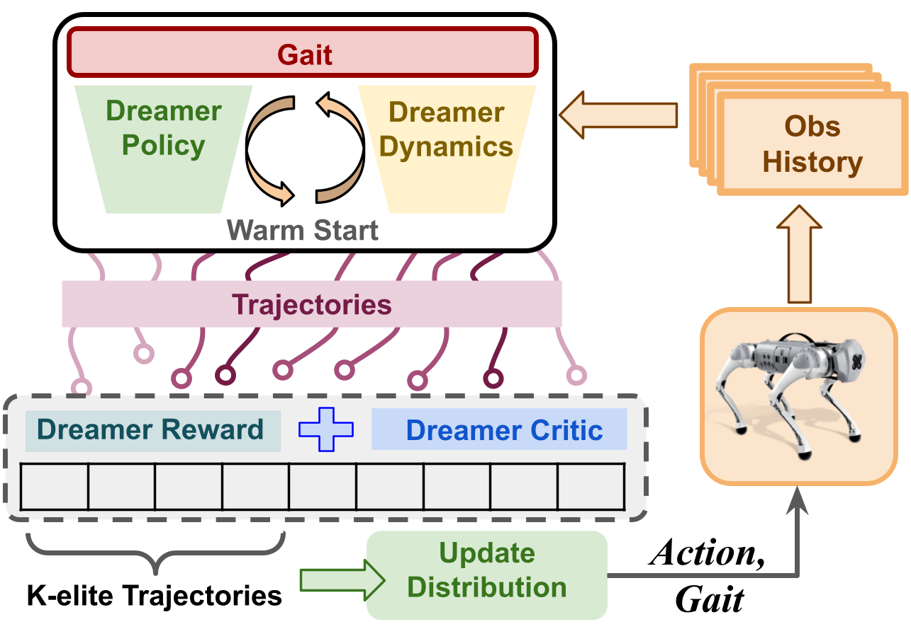

Real-time gait adaptation using RL and MPC
Model-free RL policies for quadruped locomotion often converge to a single gait, limiting adaptability and efficiency. We propose a control framework for real-time gait adaptation using Model Predictive Path Integral (MPPI) control and a Dreamer-based module. Our approach jointly optimizes actions and continuous gait parameters to enable smooth transitions, velocity tracking, and energy-efficient locomotion. Simulation results on the Unitree Go1 show up to 40% lower energy consumption compared to fixed-gait RL policies, while maintaining accurate tracking and stable transitions across a range of target speeds. Website → |